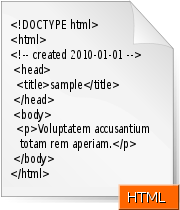

HTML
|
HTML (HyperText Markup Language) |
|
|
 |
|
|
Desarrollador |
|
|
World Wide Web Consortium & WHATWG |
|
|
Información general |
|
|
Extensión de archivo |
|
|
Tipo de MIME |
|
|
Type code |
|
|
Uniform Type Identifier |
public.html |
|
Tipo de formato |
Lenguaje de marcado |
|
Extendido de |
SGML |
|
Extendido a |
XHTML |
|
Estándar(es) |
ISO/IEC 15445 W3C HTML5 (borrador) |
|
Formato abierto |
? |
HTML, siglas de HyperText Markup Language («lenguaje de marcado de hipertexto»), es el lenguaje de marcado predominante para la elaboración de páginas web. Es usado para describir la estructura y el contenido en forma de texto, así como para complementar el texto con objetos tales como imágenes. HTML se escribe en forma de «etiquetas», rodeadas por corchetes angulares (<,>). HTML también puede describir, hasta un cierto punto, la apariencia de un documento, y puede incluir un script (por ejemplo JavaScript), el cual puede afectar el comportamiento de navegadores web y otros procesadores de HTML.
HTML también es usado para referirse al contenido del cocifrantipo de MIME text/html o todavía más ampliamente como un término genérico para el HTML, ya sea en forma descendida del XML (como XHTML 1.0 y posteriores) o en forma descendida directamente de SGML (como HTML 4.01 y anteriores).
Navegador web
{kind=link}

El WorldWideWeb para equipos basados en NeXT, fue el primer navegador web (1991).
Un navegador o navegador web (del inglés, web browser) es una aplicación que opera a través de Internet, interpretando la información de archivos y sitios web para que podamos ser capaces de leerla, (ya se encuentre ésta alojada en un servidor dentro de la World Wide Web o en un servidor local).
El navegador interpreta el código, HTML generalmente, en el que está escrita la página web y lo presenta en pantalla permitiendo al usuario interactuar con su contenido y navegar hacia otros lugares de la red mediante enlaces o hipervínculos.
La funcionalidad básica de un navegador web es permitir la visualización de documentos de texto, posiblemente con recursos multimedia incrustados. Los documentos pueden estar ubicados en la computadora en donde está el usuario, pero también pueden estar en cualquier otro dispositivo que esté conectado a la computadora del usuario o a través de Internet, y que tenga los recursos necesarios para la transmisión de los documentos (un software servidor web).
En informática, la World Wide Web (WWW) o Red informática mundial1 es un sistema de distribución de información basado en hipertexto o hipermedios enlazados y accesibles a través de Internet. Con un navegador web, un usuario visualiza sitios web compuestos de páginas web que pueden contener texto, imágenes, vídeos u otros contenidos multimedia, y navega a través de ellas usando hiperenlaces.
La Web fue creada alrededor de 1989 por el inglés Tim Berners-Lee con la ayuda del belga Robert Cailliau mientras trabajaban en el CERN en Ginebra, Suiza, y publicado en 1992. Desde entonces, Berners-Lee ha jugado un papel activo guiando el desarrollo de estándares Web (como los lenguajes de marcado con los que se crean las páginas web), y en los últimos años ha abogado por su visión de una Web semántica.
En informática, un servidor es una computadora que, formando parte de una red, provee servicios a otras computadoras denominadas clientes.1
También se suele denominar con la palabra servidor a:
- Una aplicación informática o programa que realiza algunas tareas en beneficio de otras aplicaciones llamadas clientes. Algunos servicios habituales son los servicios de archivos, que permiten a los usuarios almacenar y acceder a los archivos de una computadora y los servicios de aplicaciones, que realizan tareas en beneficio directo del usuario final. Este es el significado original del término. Es posible que un ordenador cumpla simultáneamente las funciones de cliente y de servidor.
- Una computadora en la que se ejecuta un programa que realiza alguna tarea en beneficio de otras aplicaciones llamadas clientes, tanto si se trata de un ordenador central (mainframe), un miniordenador, una computadora personal, una PDA o un sistema embebido; sin embargo, hay computadoras destinadas únicamente a proveer los servicios de estos programas: estos son los servidores por antonomasia.
{kind=link}

Ejemplo de un servidor del tipo rack.
- Un servidor no es necesariamente una máquina de última generación de grandes proporciones, no es necesariamente un superordenador; un servidor puede ser desde una computadora vieja, hasta una máquina sumamente potente (ej.: servidores web, bases de datos grandes, etc. Procesadores especiales y hasta varios terabytes de memoria). Todo esto depende del uso que se le dé al servidor. Si usted lo desea, puede convertir al equipo desde el cual usted está leyendo esto en un servidor instalando un programa que trabaje por la red y a la que los usuarios de su red ingresen a través de un programa de servidor web como Apache.
Por lo cual podemos llegar a la conclusión de que un servidor también puede ser un proceso que entrega información o sirve a otro proceso. El modelo Cliente-servidor no necesariamente implica tener dos ordenadores, ya que un proceso cliente puede solicitar algo como una impresión a un proceso servidor en un mismo ordenador.